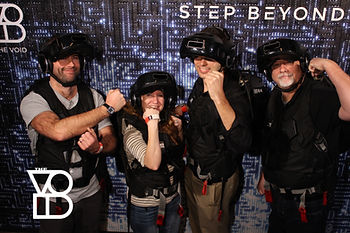
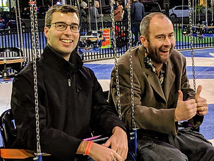

Sakai Campfire Stories: Dining and Other Adventures
Feb 14, 2019
2 min read
One of the joys of Sakai Camp is the opportunity to spend time networking and socializing with of fun-loving community members. Typically, we dine together most nights, and engage in other games or activities. Our first group dinner on Sunday evening was at The Edison, a relatively new restaurant in Disney Springs. The industrial-gothic, somewhat steampunk decor offered a nice ambiance for our first group dinner. I’m told the place really starts hopping later at night when there is live entertainment. We weren’t there during a show, but the food was certainly tasty.
A few of the more adventurous campers also went out after dinner to The Void. (Surely, the story about Dr. Chuck being afraid of virtual lava is just a vicious rumor...)

Monday evening’s restaurant was a Sakai Camp tradition (generously sponsored by Dr. Chuck and Learning Experiences). The group went to Cafe Tu Tu Tango - an artsy, eclectic, bohemian, place where we shared small plates and drinks, surrounded by work from local artists. Another evening of networking, fun, and (too much!) food with camp friends.
After dinner, a couple of very intrepid Sakaigers rose to great heights (nearly 450 feet!) on the Orlando StarFlyer - the tallest swing ride on earth. Hat’s off to Shawn and Adrian! I admire their fearlessness, but you won’t catch me up on that thing!

A slightly smaller group ventured out to The Knife for dinner on Tuesday, with a few folks traveling back home early and others peeling off to do their own thing.
And finally, Tuesday evening ended with a rousing game of putt-putt at Disney's Fantasia Gardens for those who wanted to get their game on.